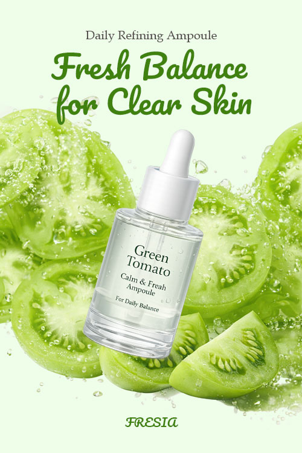
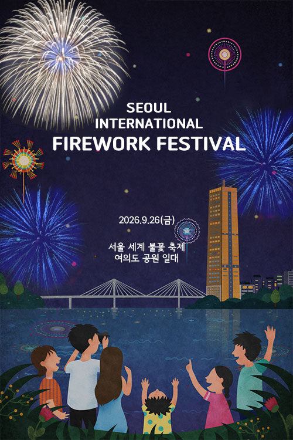
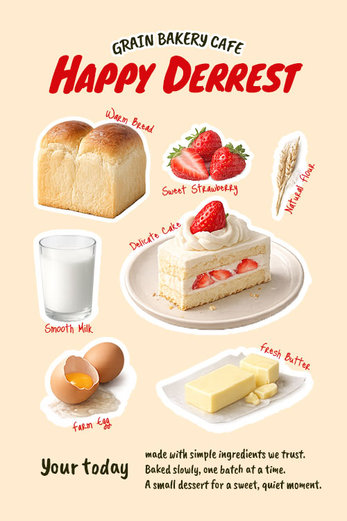
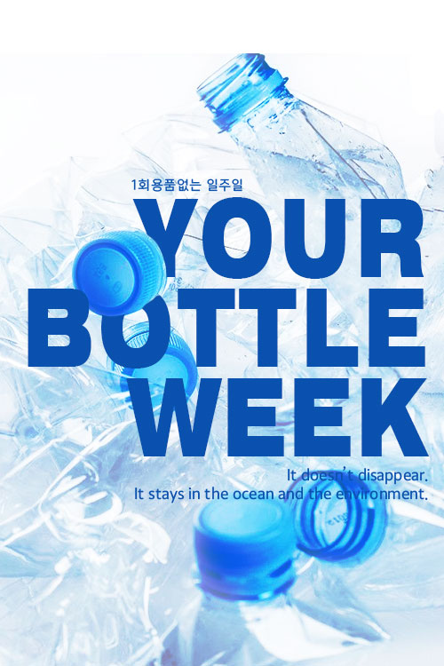

Design that shapes intuitive experiences
고민하지 않아도 자연스럽게 흐르는 경험을 만듭니다
디자인이란 눈에 보이는 화려함을 넘어 사용자의 심리적 흐름을 설계하는 과정이라 믿습니다. 사용자는 의식하지 않아도 자연스러운 흐름 속에서 움직이며 화면 안의 의미를 발견합니다.
저는 작은 디테일 하나가 전체 경험을 바꾼다고 확신하기에, 보이지 않는 부분까지 끊임없이 고민합니다. 디자인의 심미성은 물론 구현의 효율성을 고려한 최적의 코딩으로 유연하고 직관적인 인터페이스를 제공하여, 사용자가 흐름에 몸을 맡길 수 있는 '의미 있는 경험'을 설계하는 것이 제가 지향하는 디자인의 본질입니다.

Collaboration
좋은 디자인은 완벽한 픽셀을 넘어, 동료와의 유연한 소통과 기술적 이해에서 완성된다고 믿습니다.
-
공감하는 디자이너
획자의 의도를 정확하게 파악하고, 사용자의 입장에서 공감할 수 있는 최적의 시각적 언어를 제안합니다.
-
시스템 중심의 사고
개발자가 구현하기 용이한 구조를 고민하고, 기획자의 의도를 정확하게 시각화하기 위해 끊임 없이 소통합니다
-
유연한 피드백
프로젝트의 완성도를 높이기 위한 피드백을 즐기며, 더 나은 결과물을 위해 동료들과 함께 정답을 찾아 나갑니다.
Core Competency
사용자의 심리적 흐름을 분석하고, 이를 안정적인 코드로 구현해내는 실무형 역량을 갖추고 있습니다.
-
Design System (Figma)
컴포넌트 단위의 디자인 시스템을 구축하여 작업의 효율성을 높이고, 기획의 의도가 개발로 이어질 수 있는 정교한 가이드를 제작합니다.
-
Responsive Interface
다양한 디바이스의 환경에서도 끊김 없는 사용자 경험을 위해, 기기 별 최적화된 레이아웃과 유연한 인터페이스를 설계합니다.
-
Creative Publishing
시각적 의도를 100% 실현하기 위해 직접 코딩하며, 웹 표준과 접근성을 준수하는 효율적인 퍼블리싱으로 생명력 있는 웹을 완성합니다.
Certification
웹 디자인을 공부하면서 취득한 자격증 입니다.
- 2026.04
- GTQ(그래픽기술자격)1급
- 한국생산성본부
- 2026.04
- GTQ(그래픽기술자격)1급
- 한국생산성본부
- 2026.04
- GTQ(그래픽기술자격)1급
- 한국생산성본부
Expertise
기획부터 디자인과 퍼블리싱 전반의 프로세스를 깊이 있게 이해하며, 각 단계에 최적화된 다양한 도구들을 자유롭게 활용할 수 있습니다. 시각적 아이디어를 정교한 기술로 실체화하며, 유연한 툴 활용 능력을 바탕으로 완성도 높은 디지털 환경을 구축할 수 있습니다.
-
Photoshop
다양한 소스를 정교하게 합성하고 보정하여 브랜드의 감성이 담긴 감각적인 메인 비주얼과 상세페이지를 디자인할 수 있습니다. 또한 각 프로젝트의 무드와 주제를 정확히 파악하여, 사용자의 시선을 사로잡는 맞춤형 팝업 및 배너를 목적에 맞게 제작할 수 있습니다.
-
Illustrator
확대해도 이미지가 깨지지 않는 벡터(Vector) 방식의 특성을 활용하여, 어떤 해상도에서도 선명한 로고와 아이콘을 제작할 수 있습니다. 브랜드의 아이덴티티를 반영한 독창적인 그래픽 요소를 드로잉하고, 인쇄물부터 웹까지 다양한 매체에 적용 가능한 디자인 에셋을 완성할 수 있습니다.
-
Figma
사용자 경험(UX)을 고려한 직관적인 UI 설계 및 프로토타이핑이 가능합니다. 컴포넌트 및 디자인 시스템을 구축하여 효율적이고 일관성 있는 디자인 작업을 수행할 수 있습니다. 실시간 공유 기능을 활용해 개발자 및 협업 팀과 원활한 커뮤니케이션을 주고받을 수 있습니다.
-

html5
웹 표준을 준수하는 시맨틱 마크업으로 검색 엔진에 최적화된 구조를 설계할 수 있습니다. 웹 접근성을 준수하는 마크업을 구성하여 장애인도 쉽게 접근할 수 있는 홈페이지를 만들 수 있습니다.
-

CSS3
다양한 애니메이션을 구현하여 인터랙티브 홈페이지를 구현할 수 있고, 미디어 쿼리를 활용하여 모바일, 태블릿, PC 등 모든 디바이스에 대응하는 반응형 웹을 구현할 수 있습니다.
-
JavaScript
기초적인 문법을 바탕으로 슬라이드, 모달, 네비게이션 등 웹 서비스에 필요한 핵심적인 동적 기능을 구현할 수 있습니다. 사용자의 이벤트에 반응하는 인터랙티브한 사용자 경험을 만들어낼 수 있습니다.
-

Git
프로젝트의 변경 사항을 버전별로 기록하여 안정적으로 히스토리를 관리할 수 있습니다. 브랜치(Branch) 생성과 병합을 통해 여러 가지 기능을 동시에 독립적으로 개발할 수 있습니다.
-

GitHub
로컬 저장소의 작업물을 원격 저장소에 공유하여 팀원들과 실시간으로 협업할 수 있습니다. GitHub Pages를 활용하여 정적 웹 사이트를 배포하고 프로젝트 결과물을 외부에 공개할 수 있습니다.
-
Notion
프로젝트 기획부터 일정 관리, 문서화까지 전 과정을 정리하여 업무의 체계성을 유지할 수 있습니다. 협업에 필요한 디자인 가이드와 회의록을 공유하여 팀원 간의 정보 전달 효율을 높일 수 있습니다.
Popup Design
Point of Focus
가로사이즈 500px로 짧은 순간 사용자의 시선을 낚아채는 매력적인 디자인을 제작해 보았습니다.
-

Vibrant Freshness
그린 토마토의 단면과 청량한 물방울 스플래시 이펙트를 조화시켜 제품이 가진 싱그러운 수분감과 탄력 개선 효과를 시각적으로 극대화했습니다.
깨끗한 연그린 배경과 감각적인 폰트를 사용하여 '맑고 투명한 피부'라는 브랜드 정체성을 직관적으로 전달하는 디자인을 완성했습니다.
-

Sparkling Spectacle
정겨운 드로잉 일러스트를 활용해 한강에서 불꽃을 감상하는 가족의 설렘을 따뜻하게 시각화했습니다.
포근한 인물 표현과 상단의 화려한 불꽃 이펙트를 대비시켜 축제의 드라마틱한 감동을 효과적으로 전달하며, 핵심 정보가 돋보이는 레이아웃으로 구성했습니다.
-

Essence of Fresh Ingredients
신선한 식재료 일러스트와 고퀄리티 이미지를 부드러운 파스텔 톤 배경에 조화롭게 배치했습니다.
'다이어리 꾸미기' 컨셉의 손글씨 서체와 스티커 오브젝트를 활용해 브랜드 특유의 아기자기하고 트렌디한 무드를 연출했으며, 건강한 디저트에 대한 신뢰감을 감성적으로 표현했습니다.
-

Environment Challenge
겹쳐진 플라스틱 병의 이미지와 차가운 블루 톤을 사용해 썩지 않는 플라스틱 문제의 냉혹한 현실을 경고했습니다.
볼드한 타이포그래피를 중앙에 배치하여 사용자의 시선을 즉각적으로 사로잡고, 강렬한 메시지 각인을 통해 캠페인의 시급성을 직관적으로 전달했습니다.
Poster Design
Essence of Message
디자인 너머의 있는 메시지를 명확하게 담아내는 본질에 집중하여, 기억에 남는 경험을 디자인 해보았습니다.
Detail Design
Visual Flow & Strategic Design
가상의 상품에 대한 상세페이지를 AI어시스턴스와 포토샵, 일러스트를 사용하여 디자인해보았습니다.
Responsive Web Works
{ Modern & Minimal }
실제 서비스 환경을 고려하여 제작된 반응형 프로젝트들입니다.
그리드 시스템과 상대단위를 활용하여 어떤 브라우저에서도 왜곡 없는 UI를 경험 하실 수 있도록 디자인하였습니다.
Break Point
-

mobile
768px
-
tab - pad
1024px
-
desktop
1920px
1Project
MORVA Coffee Responsive WebSite
커피의 화려함보다는 '본질(Flavor)'과 '휴식(Moment)'에 집중했습니다.
장식적인 요소를 최소화하고 화이트 스페이스(여백)를 과감하게 활용하여,
사용자가 브랜드의 이미지와 콘텐츠에 온전히 몰입할 수 있는 미니멀리즘 디자인을 채택했습니다.


A Designer Growing

멈추지 않는 엔진, 함께 성장하는 디자이너 김선영입니다.
오늘의 트렌드에 안주하지 않고, 내일의 기술을 학습하며 브랜드와 함께 성장하겠습니다.
매일 1%의 디테일을 더해 어제보다 나은 사용자 경험을 설계하는 디자이너 정현진이 되겠습니다.